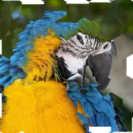

Zeshoektegels verschuiven

Verdeelt de laag in zeshoekige tegels en schuift het beeld in elke tegel in een willekeurige richting.
Instellingen
| Instelling | Type | Bereik | Standaard |
|---|---|---|---|
| Sterkte | Getal | 0 tot 1 | 0.1 |
| Verschuiving | Punt (X, Y) | -5000 px tot 5000 px | 0 px, 0 px |
| Aantal | Getal | 0.5 tot 200 | 10 |
| Hoek | Hoek | -3600° tot 3600° | 0° |
| Seed | Getal | 0 tot 5 | 0 |